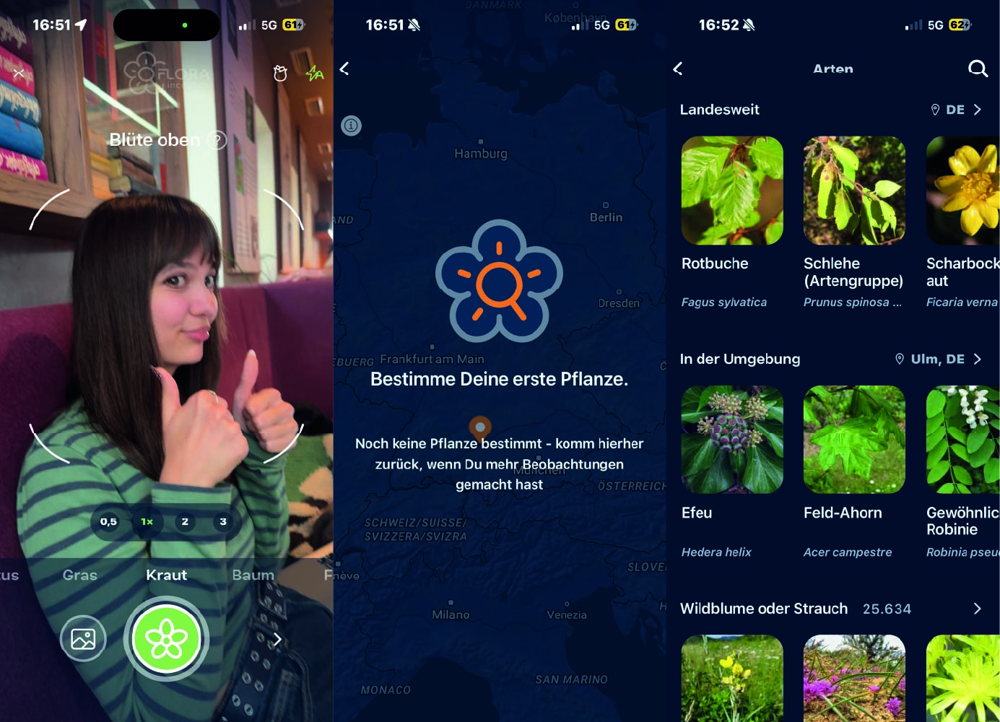
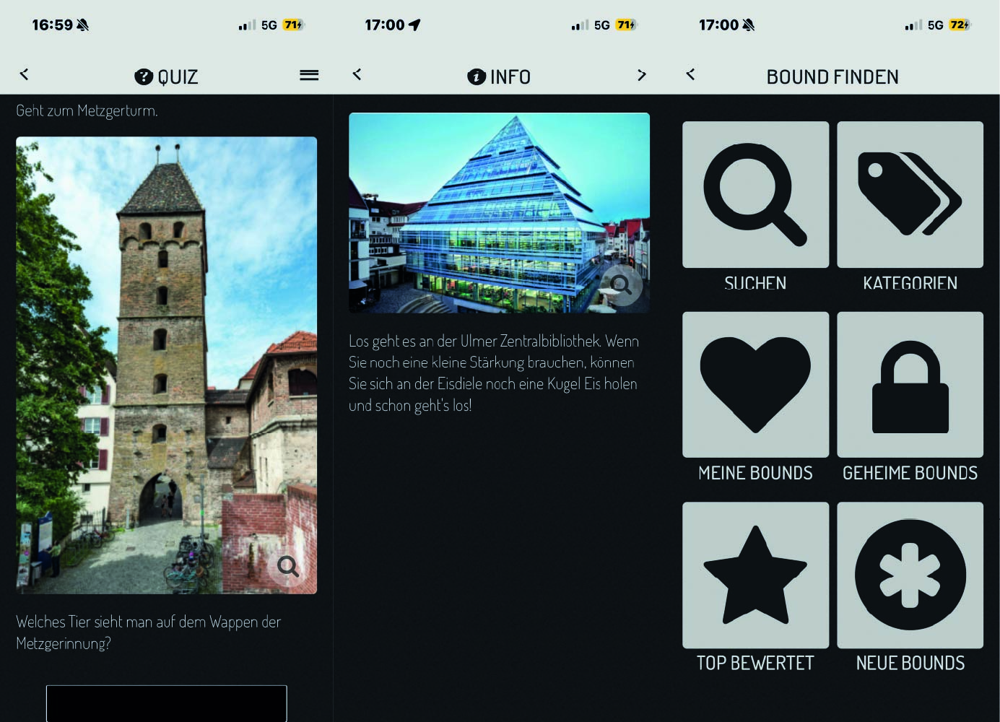
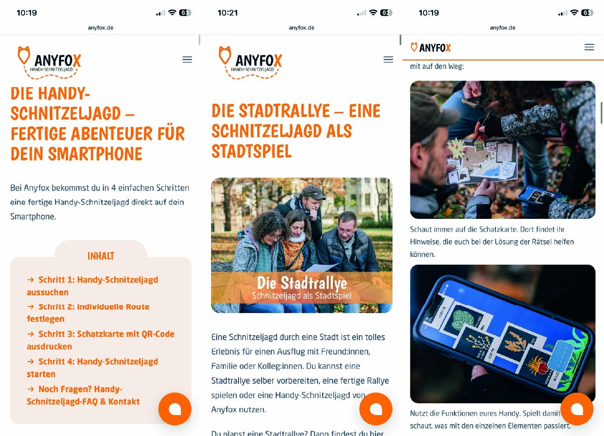

Botanischer Garten
Text
Rezensionen
Text
Flora incognita (learning App)

In der ersten App die wir uns ausgesucht haben, dreht sich alles um das Scannen von Planzen und deren Informationen. Auch das ist ein Bestandteil unseres Produkts. Wir möchten also den Besucher*innen mit Hilfe einer Scanfunktion Wissen vermitteln. Natürlich möchten wir diese aber auf eine spielerische Art, wie z.B durch kleine Aufgaben, umsetzen. Vorerst soll das Erkunden im Vordergrund stehen und dann die Informationen!
Hier hat sich die Frage gestellt, ob wir zusätzlich auch ein Sammelbuch erstellen sollen, um den Überblick über die bereits gescannten Pflanzen zu haben.
Was gefällt uns am Design? Uns überzeugte die einfache Scanfunktion, vermutlich kann man diese aber noch mehr reduzieren, da wir die meisten Infos überhaupt nicht benötigen.
Wir werden uns an dem Overlay der Pflanzenübersicht orientieren, jedoch möchten wir hier auch gerne eigene Zeichnungen anlegen.
Actionbound (Guide)

Bei dieser App liegt der Fokus definitiv auf der Funktion und nicht auf dem Design!
Das Produkt ist wie ein kleiner Cityguide durch die ausgewählte Stadt. Da wir auch einen kleinen Guide durch den Garten haben, finden wir die App ganz passend auch wegen der kleinen Fragen, die wir bei uns einbauen möchten. Die Zielgruppe soll, genau wie bei der App, nur kurz auf das Handy schauen und in Folge dessen sich mehr auf die Umgebung konzentrieren und vor Ort aktiv nach den Pflanzen suchen/Aufgaben erledigen.
In der Zukunft werden wir auch die Frage angehen, welche Features wir letztendlich in unsere App haben möchten. Sammelbuch, Favoriten, Routen etc.
Anyfox (Schnitzeljagd)

Produkt als Webbrowser und dann das ausgewählte "Rätsel" als App
Da die anderen Lightning Demos mehr auf unsere vorherige Idee angepasst sind, haben wir uns zusätzlich noch eine andere App rausgesucht, um auch für unsere neue Idee bessere Vergleiche zu ziehen.
Anyfox ist ein Produkt, bei dem man sich für eine Schnitzeljagd entscheiden kann. Je nach Wohnort kann man sich zwischen mehreren Optionen entscheiden. Das Produkt verbindet verschiedene Stationen, Schwierigkeiten und Fragen mit Exit-Elementen, also genau das, was wir für unsere App suchen. Wir müssen jedoch immer im Hinterkopf behalten, dass wir unser Produkt an Kinder richten. Wir sollten deshalb darauf achten, wie wir bestimmte Elemente übernehmen könnten ohne dass es für die Kinder zu "schwierig" wird.
Wir müssen also einen guten Ausgleich zwischen Spaß und Rätseln finden.
Schwierigkeiten: Leider ist der Zugriff auf die Designs ein wenig beschränkt, da man für die Apps selbst zahlen muss. Orientieren werden wir uns grundsätzlich also nur an den Vorschaubildern und der Website selbst. Die warme Farbe und verspielte Schrift stechen hier besonders ins Auge.
Name
text
Name
text
Fazit zu den Lightning Demos
Grundsätzlich kann man sagen, dass uns die Recherche nach den Demos viel geholfen hat.
Wir wissen nun besser, was wir wollen und was nicht. Außerdem konnten wir so unsere Ideen
besser überdenken und weiterentwickeln.
Wir haben uns viele Gedanken gemacht, wie wir unser Produkt gestalten möchten und welche
Dinge wir später berücksichtigen wollen. Die Demos halten wir uns dafür natürlich im
Hinterkopf.